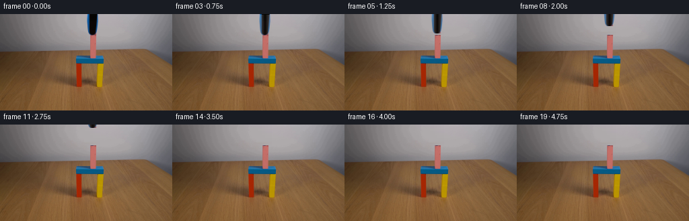
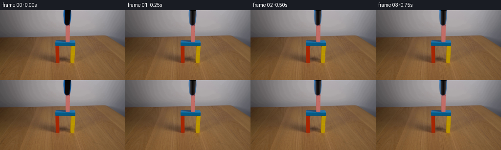

CODING AGENTS AS PIXEL WORLD MODELS
traex/DeepSeek-V4.1-Flash · 0173
点击播放 · 原生 RGB 像素
逐轮保存的候选
回放视频、检查图与代码变化。
每份候选均可单独播放。实际图片检查记录在下方工具轨迹中。
候选 01播放与检查图
点击播放 · 原生 RGB 像素


展开代码变化
--- 上一保存版本
+++ 本次保存版本
@@ -0,0 +1,100 @@
+from pathlib import Path
+
+import numpy as np
+from PIL import Image
+
+import artifact_io
+
+
+CASE_DIR = Path(__file__).resolve().parent
+FRAME_COUNT = 20
+
+
+def _smoothstep(edge0, edge1, values):
+ t = np.clip((values - edge0) / (edge1 - edge0), 0.0, 1.0)
+ return t * t * (3.0 - 2.0 * t)
+
+
+def _wall_background(frame):
+ """Reconstruct the smooth wall strip hidden by the overhead tool."""
+ background = frame.astype(np.float32).copy()
+ left_x, right_x = 127, 148
+
+ for y in range(0, 31):
+ left = frame[y, left_x].astype(np.float32)
+ right = frame[y, right_x].astype(np.float32)
+ span = np.arange(left_x + 1, right_x, dtype=np.float32)
+ weight = (span - left_x) / (right_x - left_x)
+ background[y, left_x + 1:right_x] = (
+ left[None, :] * (1.0 - weight[:, None])
+ + right[None, :] * weight[:, None]
+ )
+
+ return background
+
+
+def _tool_layer(frame, background):
+ """Extract the blue-black tool with a soft edge from the source plate."""
+ region = np.s_[0:31, 127:149]
+ original = frame[region].astype(np.float32)
+ clean = background[region]
+ difference = np.linalg.norm(original - clean, axis=2)
+ alpha = _smoothstep(4.0, 13.0, difference)
+
+ # Keep the narrow blue side rails while excluding the untouched wall corners.
+ yy, xx = np.mgrid[0:31, 127:149]
+ center_weight = np.clip(1.0 - np.abs(xx - 137.5) / 12.0, 0.0, 1.0)
+ alpha *= 0.35 + 0.65 * center_weight
+ alpha[0, :] = np.maximum(alpha[0, :], _smoothstep(4.0, 13.0, difference[0]))
+ return original, alpha.astype(np.float32)
+
+
+def _composite_tool(background, tool, alpha, offset_y):
+ result = background.copy()
+ if offset_y >= 31:
+ return result
+
+ shifted = np.zeros_like(tool)
+ shifted_alpha = np.zeros_like(alpha)
+ src_y0 = 0
+ dst_y0 = -offset_y
+ if dst_y0 < 0:
+ src_y0 = -dst_y0
+ dst_y0 = 0
+ height = min(tool.shape[0] - src_y0, result.shape[0] - dst_y0)
+ if height <= 0:
+ return result
+
+ shifted[dst_y0:dst_y0 + height] = tool[src_y0:src_y0 + height]
+ shifted_alpha[dst_y0:dst_y0 + height] = alpha[src_y0:src_y0 + height]
+ x0, x1 = 127, 149
+ a = shifted_alpha[:, :, None]
+ result[0:31, x0:x1] = result[0:31, x0:x1] * (1.0 - a) + shifted * a
+ return result
+
+
+def generate():
+ source = np.asarray(
+ Image.open(CASE_DIR / "first_frame.png").convert("RGB"), dtype=np.uint8
+ )
+ frame0 = source.copy()
+ background = _wall_background(frame0)
+ tool, alpha = _tool_layer(frame0, background)
+
+ # Let the grasp read clearly before the overhead tool releases and retracts.
+ frames = [frame0]
+ for index in range(1, FRAME_COUNT):
+ t = np.clip((index - 2.0) / 14.0, 0.0, 1.0)
+ eased = t * t * t * (t * (t * 6.0 - 15.0) + 10.0)
+ offset_y = int(round(34.0 * eased))
+ rendered = _composite_tool(background, tool, alpha, offset_y)
+ frames.append(np.clip(rendered, 0, 255).astype(np.uint8))
+
+ frames = np.stack(frames, axis=0)
+ assert frames.shape == (20, 144, 256, 3)
+ assert np.array_equal(frames[0], source)
+ return frames
+
+
+if __name__ == "__main__":
+ artifact_io.save(generate(), CASE_DIR)
可观测工具轨迹
实际执行的命令与返回图片。
命令 1exit 0
/bin/bash -c "pwd && rg --files -g '"'!*.pyc'"' -g '"'!__pycache__'"'"
命令 2exit 0
/bin/bash -c "sed -n '1,240p' prompt.txt"
命令 3exit 0
/bin/bash -c "sed -n '1,280p' GENERATION_RULES.md"
命令 4exit 0
/bin/bash -c "sed -n '1,240p' artifact_io.py"
命令 5exit 127
/bin/bash -c "file first_frame.png && python - <<'PY'
from PIL import Image
import numpy as np
im=Image.open('first_frame.png')
print(im.mode, im.size)
a=np.asarray(im.convert('RGB'))
print('shape',a.shape,'min',a.min(axis=(0,1)),'max',a.max(axis=(0,1)),'mean',a.mean(axis=(0,1)))
print('corners',a[0,0],a[0,-1],a[-1,0],a[-1,-1])
# exact colors top 30
c,n=np.unique(a.reshape(-1,3),axis=0,return_counts=True)
idx=np.argsort(n)[-40:][::-1]
for i in idx: print(n[i], tuple(c[i]))
PY"命令 6exit 0
/bin/bash -c "python - <<'PY'
from PIL import Image
import numpy as np
im=Image.open('first_frame.png').convert('RGB')
a=np.asarray(im)
print('mode,size',im.mode,im.size)
print('shape',a.shape,'min',a.min(axis=(0,1)),'max',a.max(axis=(0,1)),'mean',a.mean(axis=(0,1)))
print('corners',a[0,0],a[0,-1],a[-1,0],a[-1,-1])
# color stats per grid 8x16 cells, report mean and std
for gy in range(9):
row=[]
for gx in range(16):
block=a[gy*16:(gy+1)*16,gx*16:(gx+1)*16]
m=block.reshape(-1,3).mean(0).astype(int)
row.append('#%02x%02x%02x'%tuple(m))
print(' '.join(row))
# top colors
c,n=np.unique(a.reshape(-1,3),axis=0,return_counts=True)
idx=np.argsort(n)[-50:][::-1]
print('top')
for i in idx: print(int(n[i]), tuple(map(int,c[i])))
PY"命令 7exit 0
/bin/bash -c "python - <<'PY'
try:
import cv2; print('cv2',cv2.__version__)
except Exception as e: print('no cv2',e)
try:
import scipy; print('scipy',scipy.__version__)
except Exception as e: print('no scipy',e)
PY"命令 8exit 0
/bin/bash -c "python - <<'PY'
import cv2,numpy as np
from PIL import Image
a=np.asarray(Image.open('first_frame.png').convert('RGB'))
hsv=cv2.cvtColor(a,cv2.COLOR_RGB2HSV)
# Kmeans Lab/RGB k=12
X=a.reshape(-1,3).astype(np.float32)
crit=(cv2.TERM_CRITERIA_EPS+cv2.TERM_CRITERIA_MAX_ITER,100,0.2)
_,lab,cent=cv2.kmeans(X,14,None,crit,5,cv2.KMEANS_PP_CENTERS)
lab=lab.reshape(a.shape[:2]); cent=cent.astype(int)
for i,c in sorted(enumerate(cent), key=lambda t:-np.sum(lab==t[0])):
m=lab==i; ys,xs=np.where(m)
print(i, np.sum(m),tuple(c),'bbox', (xs.min(),ys.min(),xs.max(),ys.max()), 'meanRGB',a[m].mean(0).astype(int))
# high sat connected components
S=hsv[:,:,1]; V=hsv[:,:,2]
for t in [40,60,80,100]:
m=((S>t)&(V>30)).astype(np.uint8)
n,cc,stats,cent2=cv2.connectedComponentsWithStats(m,8)
print('\\nSAT',t)
for j in np.argsort(stats[1:,4])[::-1][:20]+1:
x,y,w,h,area=stats[j]
if area>=8: print(area,(x,y,w,h),'rgb',a[cc==j].mean(0).astype(int),'hsv',hsv[cc==j].mean(0).astype(int))
PY"命令 9exit 0
/bin/bash -c "python - <<'PY'
from PIL import Image
import numpy as np, cv2
a=np.asarray(Image.open('first_frame.png').convert('RGB')).astype(np.int16)
R,G,B=a[:,:,0],a[:,:,1],a[:,:,2]
masks={
'pink':(R>100)&(R>G*1.45)&(R>B*1.35)&(G>50),
'blue':(B>70)&(B>R*1.6)&(G>R*1.8),
'yellow':(R>120)&(G>80)&(B<60)&(R>G*1.15),
'red':(R>100)&(R>G*2.2)&(R>B*2.0)&(G<80),
'dark':(R<50)&(G<50)&(B<50),
}
for name,m in masks.items():
m=m.astype(np.uint8)
n,cc,st,ct=cv2.connectedComponentsWithStats(m,8)
print('\\n',name,'total',m.sum())
for j in np.argsort(st[1:,4])[::-1]+1:
x,y,w,h,area=st[j]
if area<3: continue
print(' ',area,(x,y,w,h),'mean',a[cc==j].mean(0).astype(int))
# coarse class ASCII 2x2 pixel blocks over region x100:160 y0:116
labels=np.zeros((144,256),dtype='U1'); labels[:]='.'
for k,ch in [('pink','P'),('blue','U'),('yellow','Y'),('red','R'),('dark','K')]: labels[masks[k]]=ch
for y in range(0,116,2):
s=''
for x in range(100,160,2):
b=labels[y:y+2,x:x+2].ravel(); c,cnt=np.unique(b,return_counts=True); s+=c[np.argmax(cnt)] if c[0]"'!='"'.' or len(c)>1 else '.'
print(f'{y:03d} {s}')
PY"命令 10exit 0
/bin/bash -c "python - <<'PY'
from PIL import Image
import numpy as np, cv2
im=Image.open('first_frame.png').convert('RGB'); a=np.asarray(im); hsv=cv2.cvtColor(a,cv2.COLOR_RGB2HSV)
# print char per pixel x120..158 every row 0..78; classify nearest prototypes manually
protos=np.array([[8,6,6],[18,95,137],[189,107,102],[174,170,171],[160,156,157],[140,136,137],[130,96,59],[163,39,5],[182,145,1],[137,100,61]])
chars='KBPMGgWrYw'
for y in range(0,80):
s=''
for x in range(118,160):
d=((protos-a[y,x])**2).sum(1); c=chars[np.argmin(d)]
s+=c
print(f'{y:02d} {s}')
PY"命令 11exit 0
/bin/bash -c "python - <<'PY'
from PIL import Image
import numpy as np
from scipy import ndimage
im=Image.open('first_frame.png').convert('RGB'); a=np.asarray(im).astype(float)
# sample stripe rows/cols, gradients
for y in [60,65,70,73,74,75,80,90,100,110,120,130]:
# segments by horizontal rgb derivative
d=np.linalg.norm(np.diff(a[y],axis=0),axis=1); inds=np.where(d>30)[0]
print('row',y,'edges',inds.tolist()[:50])
for x in [105,110,115,120,130,140,150]:
d=np.linalg.norm(np.diff(a[:,x],axis=0),axis=1); inds=np.where(d>30)[0]
print('col',x,'edges',inds.tolist()[:50])
PY"命令 12exit 0
/bin/bash -c "python - <<'PY'
from PIL import Image
import numpy as np
im=np.asarray(Image.open('first_frame.png').convert('RGB'))
# colors representative of each flat region
pts=[(0,0),(30,10),(100,10),(180,10),(230,10),(100,60),(110,60),(115,65),(125,65),(140,65),(150,65),(160,65),(160,80),(160,100),(100,100),(180,100),(160,120),(100,125),(200,125),(120,140)]
for x,y in pts: print((x,y),im[y,x])
PY"命令 13exit 0
/bin/bash -c "python - <<'PY'
from PIL import Image
import numpy as np
im=Image.open('first_frame.png').convert('RGB'); a=np.asarray(im)
# save nearest 4x and crops in tmp for potential OCR? generate diagnostic
Image.fromarray(a).resize((1024,576),Image.Resampling.NEAREST).save('.tmp/source4x.png')
Image.fromarray(a[50:125,90:170]).resize((640,600),Image.Resampling.NEAREST).save('.tmp/setup8x.png')
# row sample exact block median colors each 5 px across center
for y in [62,63,64,65,68,72,73,74,80,90,100,105,108,110,120]:
print('Y',y, [ (x,tuple(map(int,a[y,x]))) for x in range(108,160,4)])
PY"命令 14exit 0
/bin/bash -c "python - <<'PY'
from PIL import Image
import numpy as np, cv2
a=np.asarray(Image.open('first_frame.png').convert('RGB'))
# HSV and representative RGB for x ranges, each region y ranges
for y0,y1 in [(0,30),(31,60),(61,66),(67,73),(74,107),(108,143)]:
print('\\nY',y0,y1)
for x0,x1 in [(0,40),(40,80),(80,112),(113,120),(121,133),(134,142),(143,153),(154,200),(200,256)]:
z=a[y0:y1,x0:x1].reshape(-1,3); m=np.median(z,0).astype(int); sd=np.std(z,0).astype(int)
print(f'{x0:3}-{x1:3}',tuple(m),tuple(sd),end='; ')
print()
# Estimate masks and row/col bounds for key colors via nearest class but excluding source texture? quantile color conditions
print('gripper rows stats')
for y in range(0,74,2):
z=a[y,112:154]
print(y, 'median',np.median(z,0).astype(int),'min',z.min(0),'max',z.max(0))
PY"命令 15exit 0
/bin/bash -c "python - <<'PY'
try:
import skimage; print('skimage',skimage.__version__)
except Exception as e: print('no',e)
PY"命令 16exit 0
/bin/bash -c "python - <<'PY'
from PIL import Image
import numpy as np
a=np.asarray(Image.open('first_frame.png').convert('RGB'))
# print RGB grid x112..155 y28..76 every pixel compressed key by exact-ish labels
# derive class based on nearest colors from palette sampled at known spots
pal={'K':(9,6,6),'B':(6,89,131),'D':(48,85,119),'C':(45,112,164),'P':(190,108,102),'w':(140,105,69),'M':(165,160,161)}
keys=list(pal); pp=np.array([pal[k] for k in keys])
for y in range(26,76):
s=''
for x in range(110,158):
p=a[y,x].astype(int)
# nearest with prioritize colors
ds=[((p-np.array(pal[k]))**2).sum() for k in keys]
s+=keys[int(np.argmin(ds))]
print(f'{y:02d} {s}')
PY"命令 17exit 0
/bin/bash -c "python - <<'PY'
from PIL import Image
import numpy as np
a=np.asarray(Image.open('first_frame.png').convert('RGB'))
# print grid for y0:34, x122:156 by class nearest key sampled
pal={'K':(9,6,6),'B':(20,80,135),'C':(50,120,175),'P':(190,107,101),'M':(173,169,171),'m':(165,160,161),'G':(150,145,148),'w':(133,99,66)}
keys=list(pal); pp=np.array([pal[k] for k in keys],float)
for y in range(0,35):
s=''
for x in range(120,158):
p=a[y,x].astype(float); ds=((pp-p)**2).sum(1); s+=keys[int(np.argmin(ds))]
print(f'{y:02d} {s}')
PY"命令 18exit 0
/bin/bash -c "python - <<'PY'
from PIL import Image
import numpy as np
a=np.asarray(Image.open('first_frame.png').convert('RGB')).astype(int)
for y in [0,10,20,29,30,31,32,40,50,60,64,65,66]:
print('Y',y)
for x in range(126,149): print(x,tuple(a[y,x]),end=' | ')
print()
PY"命令 19exit 0
/bin/bash -c 'python generate.py'
命令 20exit 0
/bin/bash -c "python - <<'PY'
from PIL import Image
import numpy as np, cv2, os
source=np.asarray(Image.open('first_frame.png').convert('RGB'))
frames=np.stack([np.asarray(Image.open(f'frames/{i:02d}.png').convert('RGB')) for i in range(20)])
print('shape',frames.shape,'dtype',frames.dtype,'frame0 exact',np.array_equal(source,frames[0]))
for i in [0,1,3,5,8,11,14,17,19]:
d=np.abs(frames[i].astype(int)-frames[i-1].astype(int)) if i else np.zeros((144,256,3))
print(i,'mean',frames[i].mean(axis=(0,1)).round(2),'diff',d.mean().round(3),'max',d.max())
# differences by crop region
for i in [1,3,5,8,11,14,17,19]:
d=np.abs(frames[i].astype(int)-frames[0].astype(int)).max(2)
ys,xs=np.where(d>10)
print('frame',i,'changed>10',len(xs),'bbox',(xs.min(),ys.min(),xs.max(),ys.max()) if len(xs) else None,'sum',d.sum())
# create detail strip each selected frame x112:160 y0:80 enlarged and save
sel=[0,1,3,5,8,11,14,17,19]
out=Image.new('RGB',(48*4*3,80*4*3),(20,20,20))
for j,i in enumerate(sel):
z=Image.fromarray(frames[i][0:80,112:160]).resize((192,320),Image.Resampling.NEAREST)
out.paste(z,((j%3)*192,(j//3)*320))
out.save('.tmp/details.png')
PY"命令 21exit 0
/bin/bash -c "python - <<'PY'
from PIL import Image
import numpy as np
F=np.stack([np.asarray(Image.open(f'frames/{i:02d}.png').convert('RGB')) for i in range(20)])
# ASCII difference of tool crop against clean final frame, x125:150 y0:36
for i in [0,1,4,5,6,8,10,12,14,16,19]:
d=np.abs(F[i].astype(int)-F[19].astype(int)).max(2)
print('\\nframe',i)
for y in range(0,36,2):
s=''
for x in range(124,152,2):
v=d[y:y+2,x:x+2].max()
s += '#' if v>80 else '+' if v>20 else '.' if v>5 else ' '
print(f'{y:02d} {s}')
# scan tool signal center dark at x134:143
print('\\ndark pixel count per frame crop')
for i in range(20):
z=F[i,0:32,127:149]
n=((z[:,:,0]<80)&(z[:,:,1]<100)).sum()
print(i,n, 'minx', z[:,:,0].min(), 'miny',np.argmin(z[:,:,0].min(1)))
PY"命令 22exit 0
/bin/bash -c "python - <<'PY'
from PIL import Image
import numpy as np
F=np.stack([np.asarray(Image.open(f'frames/{i:02d}.png').convert('RGB')) for i in range(20)])
# exact row RGB samples compare final vs source across background strip
for y in [0,10,20,25,29,30]:
print('y',y)
print('src', [tuple(F[0,y,x]) for x in range(127,149)])
print('fin', [tuple(F[19,y,x]) for x in range(127,149)])
PY"命令 23exit 0
/bin/bash -c "python -m py_compile generate.py && python - <<'PY'
import hashlib, json
from pathlib import Path
import numpy as np
from PIL import Image
root=Path('.')
with np.load(root/'pixels.npz') as z:
packed=z['pixels']
print('pixels.npz', packed.shape, packed.dtype)
assert packed.shape==(144,256,20)
unpacked=np.stack([(packed[:,:,i]>>16)&255,(packed[:,:,i]>>8)&255,packed[:,:,i]&255],axis=2).transpose(2,0,1,3).astype(np.uint8)
# direct frame integrity
frames=np.stack([np.asarray(Image.open(root/'frames'/f'{i:02d}.png').convert('RGB')) for i in range(20)])
source=np.asarray(Image.open(root/'first_frame.png').convert('RGB'))
assert frames.shape==(20,144,256,3) and frames.dtype==np.uint8
assert np.array_equal(frames[0],source)
assert np.array_equal(frames,unpacked)
assert (frames[13:]==frames[13]).all()
print('frame0_exact',True)
print('final_hold_frames',13,19)
print('index.html_bytes', (root/'index.html').stat().st_size)
print('frames_bytes', sum(p.stat().st_size for p in (root/'frames').glob('*.png')))
PY
sha256sum pixels.npz frames/00.png frames/19.png index.html"命令 24exit 0
/bin/bash -c "python - <<'PY'
from pathlib import Path
import numpy as np
from PIL import Image
root=Path('.')
frames=np.stack([np.asarray(Image.open(root/'frames'/f'{i:02d}.png').convert('RGB')) for i in range(20)])
source=np.asarray(Image.open(root/'first_frame.png').convert('RGB'))
with np.load(root/'pixels.npz') as z:
packed=z['pixels']
unpacked=np.empty((20,144,256,3),dtype=np.uint8)
for i in range(20):
unpacked[i,:,:,0]=(packed[:,:,i]>>16)&255
unpacked[i,:,:,1]=(packed[:,:,i]>>8)&255
unpacked[i,:,:,2]=packed[:,:,i]&255
assert frames.shape==(20,144,256,3) and frames.dtype==np.uint8
assert np.array_equal(frames[0],source)
assert np.array_equal(frames,unpacked)
assert (frames[13:]==frames[13]).all()
print('shape',frames.shape,'dtype',frames.dtype)
print('frame0_exact',True)
print('packed_roundtrip_exact',True)
print('final_hold_frames','13..19')
print('index.html_bytes',(root/'index.html').stat().st_size)
print('frame_png_bytes',sum(p.stat().st_size for p in (root/'frames').glob('*.png')))
PY
before="'$(sha256sum pixels.npz | cut -d'"' ' -f1)
python generate.py
after="'$(sha256sum pixels.npz | cut -d'"' ' -f1)
printf 'deterministic=%s\\n' \""'$([ "$before" = "$after" ] && echo true || echo false)"'保存候选 1 份；完成命令 24 次；可验证图片返回 0 张。原始 API 响应与完整日志保留在本地。